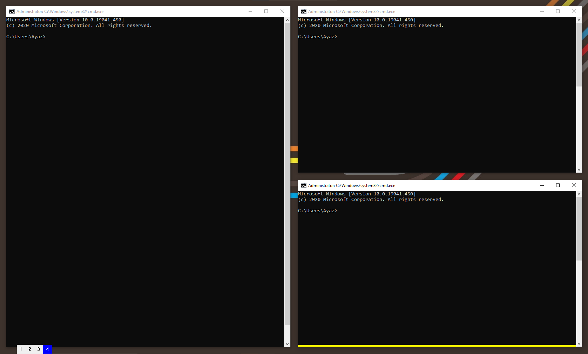
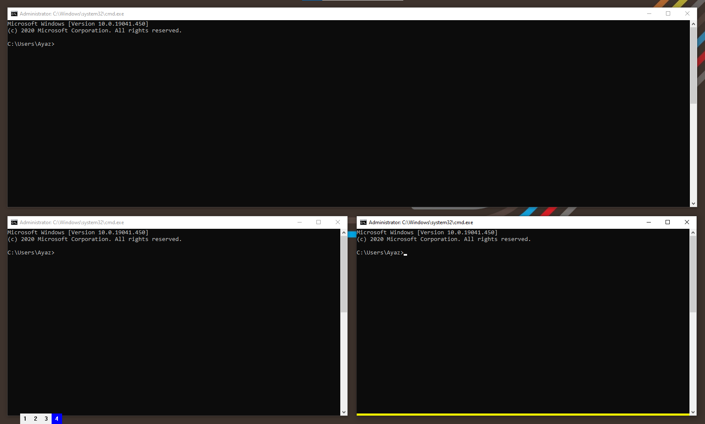
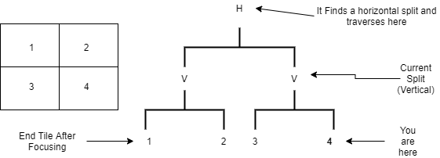

Configuration
This is the documentation for WinWM. All the things discussed apply only for the Commercial/Site version of WinWM, and not for the personal freeware.
Most of these configs will be surrounding options in config.json in the WinWM directory.
License
Copyright 2020 @ Ayaz Mammadov
Hotkeys
Modifier
modifier is the option that dictates what the modifier/super key for WinWM is. It is a string that only has 2 possible values
"alt"- the left alt key on the keyboard as the modifier key"win"- the left windows key on the keyboard as the modifier key
"alt" is the default value for this option.
destroy_tile
destroy_tile is the hotkey designated to closing/destroying the current tile that is focused.
By default, this value is "mod+shift+q"
create_tile
create_tile is the hotkey designated to creating a new tile, running the "start_command" config
By default, this value is "mod+shift+enter"
set_layout_vertical
set_layout_vertical is the hotkey designated to setting the current layout to vertical (vertical split)
By default, this value is "mod+v"
set_layout_horizontal
set_layout_horizontal is the hotkey designated to setting the current layout to horizontal (horizontal split)
By default, this value is "mod+h"
change_workspace_*
NOTE: * is a placeholder for a number in this context.
"change_workspace_*" designates the group of hotkeys to change the current desktop view to workspace *
By default, this value is "mod+\*"
move_workspace_\*
NOTE: * is a placeholder for a number in this context
"move_workspace_*" designates the group of hotkeys to change the current desktop view to workspace *
By default, this value is "mode+shift+\*"
focus_left
focus_left is the hotkey designated to changing the focus to the window on the left
By default, this value is "mod+left"
focus_right
focus_right is the hotkey designated to changing the focus to the window on the right
By default, this value is "mod+right"
focus_up
focus_up is the hotkey designated to changing the focus to the window above
By default, this value is "mod+up"
focus_down
focus_down is the hotkey designated to changing the focus to the window below
By default, this value is "mod+down"
swap_left
swap_left is the hotkey designated to swapping the current window with the window on the left
By default, this value is "mod+shift+left"
swap_right
swap_right is the hotkey designated to swapping the current window with the window on the right
By default, this value is "mod+shift+right"
swap_up
swap_up is the hotkey designated to swapping the current window with the window above
By default, this value is "mod+shift+up"
swap_down
swap_down is the hotkey designated to swapping the current window with the window on the left
By default, this value is "mod+shift+down"
flip_workspace
flips the workspace orientation, for example take the workspace below.

Flipping this workspace will result in the orientation below

By default, this value is mod+shift+d
verify_workspace
verify_workspace is used for re-rendering the workspace, incase there are any windows out of place, or windows have to been manually moved out of order.
fullscreen
fullscreen is the hotkey designated to entering fullscreen mode, or if already in fullscreen mode, exiting fullscreen mode.
By default this value is "mod+f"
go_monitor_left
go_monitor_left is the hotkey designated to changed the current focused monitor to the monitor on the left.
By default this value is "mod+n"
go_monitor_right
go_monitor_right is the hotkey designated to changed the current focused monitor to the monitor on the right.
By default this value is "mod+m"
move_monitor_left
move_monitor_left is the hotkey designated to move the current focused window (if there is any) to the monitor on the left.
By default this value is "mod+shift+n"
move_monitor_right
move_monitor_right is the hotkey designated to move the current focused window to the monitor on the right.
By default this value is "mod+shift+m"
carry_monitor_left
carry_monitor_left is the hotkey designated to carry the current focused window (if there is any) to the monitor on the left.
By default this value is "mod+shift+b"
carry_monitor_right
carry_monitor_right is the hotkey designated to carry the current focused window to the monitor on the right.
By default this value is "mod+shift+v"
shutdown
shutdown is the hotkey designated for exiting WinWM, it also restores all windows styles to how they spawned and merges all virtual desktops.
By default this value is "mod+shift+t"
focus_mouse
focus_mouse is the hotkey designated to change focus to the current tile under the cursor
By default this value is "mod+q"
bsplit
bsplit is the hotkey designated to spawn a binary split window
By default this value is "mod+x"
remove_titlebars
remove_titlebars is the hotkey designated to remove the titlebars on the tile under the cursor
By default this value is "mod+g"
Options
Options are configurations that have 2 different settings, they are described by 2 different values
"n"- meaning this option is off."y"- meaning this option is on.
adjust_for_nc
by default there is a tiny border around most windows, if this option is on then WinWM takes the border of each window into account and makes the windows fit perfectly.
By default, this value is off ("n")
remove_titlebars_experimental
This feature is experimental and may not work as intended. This feature removes captions and titlebars.
By default, this value is off ("n")
enable_logs
this option makes logs, this is used when a bug is encountered to send logs back to me. While this is open performance will degrade
By default, this value is off ("n")
true_fullscreen
this option makes fullscreen mode take up 100% of the screen area, and hides the taskbar.
By default, this value is off ("n")
Gaps
Gaps can be enabled by setting"gaps_enabled" to "y", only then will the options below take effect.
outer_gaps_vertical
"outer_gaps_vertical" describes the the pixel size of the vertical outer gap.
By default, this value is 0
outer_gaps_horizontal
"outer_gaps_horizontal" describes the pixel size of the horizontal outer gaps.
By default, this value is 0
inner_gaps_horizontal
"inner_gaps_horziontal" describes the pixel size of the inner horizontal gaps between the windows
By default, this value is 0
inner_gaps_vertical
"inner_gaps_vertical" describes the pixel size of the inner vertical gaps between the windows.
By default, this value is 0
Customization
all of these values are RGB colors describe by an array of 3 integers from 0 to 255.
The first integer describing the Red Value, the second integer describing the Green Value, the third integer describing the blue value.
active_workspace_color_button
the color of the active workspace button in the statusbar.
By default this value is [0, 0, 255]
inactive_workspace_color_button
the color of the inactive workspace button in the statusbar.
By default this value is [240, 240, 240]
inactive_monitor_color_button
the color of the active workspace button on the unfocused monitor.
By default, this value is [255, 0, 0]
active_text_color_button
the color of the text on an active workspace button.
By default, this value is [255, 255, 255]
inactive_text_color_button
the color of the text on an inactive workspace button.
By default, this value is [0, 0, 0]
focus_bar_color
the color of the focus bar on the current focused window.
By default this value is [255, 255, 0]
Filtering
windows_to_ignore
there are certain windows that don't play nicely with WinWM, "windows_to_ignore" is an array of strings that contain either the name of a window or the name of the class it belongs to, the matching works on a substring basis, so you only need a part of the name.
An example value for this Config might be : ["Notepad++", "keypirinha"]
By default, this value is []
Preferences
These are other options that let you change certain behaviours.
start_command
When you execute create_tile (mod+enter by default), this command will be called to create the new window.
By default, this value is start cmd.exe
start_directory
this is the working directory that WinWM will use, so that your applications spawned by WinWM will start from that directory (e.g. CMD starting at "C:\Users\Admin")
An Example Value for this options is :
"C:\\Users\\Admin"
By default, this value is ""
Lua Scripting
Information
WinWM contains an embedded Lua Engine, (LuaJIT-2.0.5), that allows for scripting for customization & interop purposes, it also has callbacks on certain actions to notify your scripts of certain events.
The Lua Environment provided by WinWM exports these libraries by default.
base
bit32
coroutine
debug
ffi
io
jit
math
os
package
string
table
utf8
Setup
In order to turn on Lua Scripting, the option "lua_script_path" has to be set, the value of this option by default is "", an example value for this option would be path like so
"C:\\Users\\Admin\\my_lua_script.lua"- Absolute Path"lua/my_lua_script"- Relative Path (Relative to the folder where WinWM.exe is located)
Callbacks
WinWM provides several callback such as
on_new_window(window_handle)on_destroy_window(window_handle)on_fullscreen(is_fullscreen, window_handle)on_change_workspace(workspace_number)on_exit()
If you have/want more callbacks, feel free to send me ideas
Here is an example lua script
Working With External Libs
external modules that are used in the lua scripts have to be in the same path as the WinWM.exe.
For Example.
local winapi = require 'LuaModules.winapi'
require 'LuaModules.MyOtherScript'
require 'LuaModules.winapi.windowclass'
In order to access these external modules the file structure would have to look like this
- WinWM.exe
- LuaModules <DIR>
- winapi <DIR>
windowclass.lua
- MyOtherScript.lua
Example Logger script
Just as an example on how this all works together, I'll guide you on creating a little logger script, that logs all activies and records the name of every window on every event.
I'll be using winapi which requires 2 other modules
The folder structure is as such :
- WinWM.exe
- modules <DIR>
- winapi <DIR>
- winapi.lua
- glua.lua
- events.lua
my logger script looks like this
logger.lua
require 'io'
package.path = package.path .. ';./modules/?.lua'; -- Include modules in path.
local window = require 'modules.winapi'
require 'modules.winapi.window'
FileHandle = io.open("C:\\Users\\Admin\\lua.txt", "a")
io.output(FileHandle)
function on_change_workspace(number)
io.write("wk : ", number, '\n')
end
function on_new_window(hwnd)
window_text = window.GetWindowText(hwnd)
io.write('on_new_window: ', window_text, '\n')
end
function on_destroy_window(hwnd)
window_text = window.GetWindowText(hwnd)
io.write('on_destroy_window: ', window_text, '\n')
end
function on_fullscreen(IsFullScreen, hwnd)
window_text = window.GetWindowText(hwnd)
io.write('on_fullscreen: ', IsFullScreen,' ', window_text, '\n')
end
function on_exit()
io.close(FileHandle)
end
lua.txt
wk : 2
wk : 1
wk : 2
wk : 3
wk : 4
wk : 1
wk : 3
on_fullscreen: 1 lua.md + (~\Desktop\Tech\WinWMBook\src) - GVIM1
on_fullscreen: 0 lua.md + (~\De...k\src) - GVIM1
wk : 4
on_fullscreen: 1 config.json (~\source\repos\REDACTED) - GVIM2
on_fullscreen: 0 config.json (~\source\repos\REDACTED) - GVIM2
wk : 1
wk : 2
wk : 3
wk : 4
on_new_window: Administrator: C:\Windows\system32\cmd.exe
on_destroy_window:
wk : 1
on_fullscreen: 1 #my-channel - Google Chrome
on_fullscreen: 0 #my-channel - Google Chrome
on_fullscreen: 1 #my-channel - Google Chrome
on_fullscreen: 0 #my-channel - Google Chrome
Warning
If there is an error in the lua code, a message box should prompt with the error and backtrace. There are many bugs in luajit that will crash it, which will crash WinWM. If you encounter a line of lua code that crashes WinWM, then it is Luajit crashing.
Example :
require 'io'
io.open('crash.txt', 'crash') -- crashes Luajit and WinWM
Multi-Monitor Workflow
This will be a little guide on understanding & optimizing the workflow on multi-monitor setups.
This is my current setup, monitor 1 is my primary display.

When you start WinWM on a multi-monitor setup, it creates a set of trees.
Trees can be though of like folders and directories. Each Workspace holds the same number of trees as displays.
- Workspaces
- Workspace 1
- Tree 1 (Display 1) <- Primary Display <- Focused Monitor
- Tree 2
- Workspace 2
- ..
- Workspace 9
When WinWM starts it performs an initial regrouping of all the windows, and it groups them into vertical splits. On a multi-monitor system, WinWM will perform the regrouping exactly the same except it only regroups to the primary display.

At the current moment WinWM has the primary display as the focused monitor, this is visible from the blue button on the status bar, which is the default color of the active-primary workspace button. On the other side, the second monitor has a red button, which signifies that it is not in focus.
By executing go_monitor_right (by default mod+m), we can change the the current focused monitor to the Display 2

The colors of the buttons on the status bar has changed. Display 2 now has a blue button on its status bar, showing that it is now in focus.
if we create a new window then it will place itself in display 2

each workspace starts off with the primary display as the active monitor, and each workspace remembers the monitor in focus.
you can move windows across monitors in a workspace by executing the actions
move_monitor_left(by defaultmod+shift+m)move_monitor_right(by defaultmod+shift+n)
FAQ
Q: Application won't run because MSVCP140.dll is missing
A: Install the Visual C++ Redistributable (Any version from 2015-2019 works)
Q: The Window Manager isn't resizing windows snapped to the side/corner of the desktop
A: Unsnap the windows and force a re-render (alt+r default keybind/ verify_workspace keybinding in the configs), you could also move some tiles around to force a re-render
Q: The Window Manager doesn't work with certain games protected by certain anti-cheats
A: WinWM needs to be able to access processes in-order to force the game to adhere
Q: How do the focus rules work?
A: The focus rules are quite simple
WinWM is a tree-based Window Manager, which means every split goes one layer deeper
A good visualisation of the focus rules is a 2x2 workspace, and a diagram showing how it works.
- H reprents a Horizontal Split
- V reprents a Vertical Split
- T reprents an end terminal

say you are on Tile 4. if you try to focus left, WinWM will check the current split, and since it cannot go left because the current split is vertical it will go up a level. it will the go up until it finds a horizontal split, then it will then traverse the split and follow the graph downwards sticking to the left side. In this case this lands you at Tile 1.